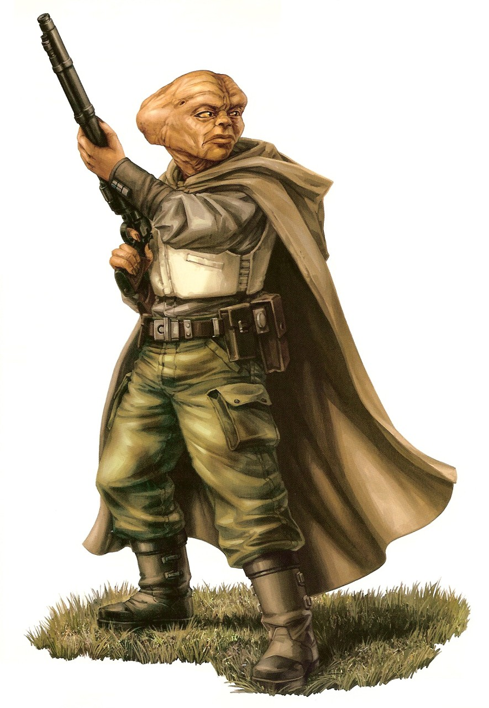

Dressellian
dressellian
Special Abilities: Dressellians begin the game with one rank in Survival. They still may not train Survival above rank 2 during character creation.
Primitive: Dressellians upgrade the difficulty of any checks involving advanced technology. This counts as any technology not available on the Dressellian's home planet, though individual pieces of technology they become familiar with over an extended period of time can become exempt from this at the GM's discretion. Dressellians can spend 10 XP at character creation to remove this penalty permanently.
The gruff, wrinkle-faced Dressellians are best known as gritty, tough outdoorsmen and master scouts. They are difficult to get along with, and distrust non-Dressellians, but once they strike up a friendship they are known to be fierce and uncompromising allies.
The Dressellians are tall, thin mammalian humanoids with elongated skulls and wrinkled faces that mimic the shades and patterns of steepara tree bark. Some refer to them as "prune faces," a derogatory term guaranteed to incense any Dressellian within earshot. Most Dressellian eyes can range from bright yellow to golden orange and provide slightly improved night vision. Dressellians are bright and agile, making them fierce warriors when cornered. Their blood is a bright teal, which is indicative of inefficient circulatory systems and a genetically recent marine heritage. As a result, Dressellians consume oxygen at almost double the rate of comparably sized humanoids.
Modern Dressellian society consists of a number of city-states run by direct representative democracies. While Dressellians from the same city-state share common views and work together, those from different city-states across the globe struggle to agree on anything. Not all Dressellians have embraced urbanization, and a large number of Dressellians still live in traditional nomadic groups. These tribes of hunter-gatherers wander the vast steepara forests that cover many of Dressel's islands and larger continents.
Traditional Dressellians depend on the near-kilometer-high trees to provide for numerous facets of their life. Giant steepara leaves have a unique texture that isn't quite like rubber or leather, which makes them ideal for use in both textiles and construction. Each tree is practically a habitat all its own, and provides for much of the Dressellian diet, which consists of steepara seed and syrup, cuirreal climber meat, and a variety of mushrooms. The steepara forests arenot without their challenges, however; fierce predators, such as the wild, Wookiee-like erselu, the stalking panagra, and the swooping, large-eyed astrigia pose a constant threat to the natives.
Imperial occupation has banded the Dressellians together in a common cause unprecedented in Dressellian history. General Orrimaarko, the former governor of Sreeharlo, leads the resistance with the help of Generals Panno and Neeralli. Many Dressellians have reverted to traditional lifestyles to better evade Imperial reprisals, and do their part to support Orrimaarko's efforts. The Dressellians, with assistance from their longtime allies the Bothans, have become masters of guerrilla warfare, striking Imperial patrols and outposts from the backs of selldu during night-time raids. Imperials on Dressel are almost exclusively human, and as such, the Dressellians have developed a negative view of most outsiders, especially humans.
While known best for their combat prowess during the Galactic Civil War, the Dressellians are also accomplished artists. Critics find Dressellian music, literature, and art deeply inspirational and filled with profound, universally accessible themes. The popularity of many Dressellian works has exploded recently among enemies of the Empire.
The moonless, temperate world of Dressel is in the Mid Rim's Noolian sector along the Askar Trace, a hyperspace route that once defined the coreward edge of Bothan Space. The planet has an oddly uniform distribution of large islands, and few true continents. The largest landmass is an equatorial island called Breehara, thought to be the birthplace of the Dressellians. Most land on Dressel is dominated by hilly grasslands and tall, ancient forests.
Bothan explorer Karka Vri'skar of clan Askar initially discovered the world two centuries before the Battle of Yavin, but, aside from the occasional trader or outlaw, the Bothans left the primitive Dressellians to their own devices while still maintaining regular diplomatic contact. Ten years before the Battle of Yavin, the Empire established a garrison and Imperialized Dressel's resources. The Dressellians engaged the Empire in guerrilla warfare, drawing on their skills as nomadic hunters and gatherers to evade the Empire.
The Dressellians speak a native language of the same name. Scholars have described the language as flowing and organic, filled with soft sounds. However, over the past two centuries, the Dressellians have adopted a number of Bothan words, particularly to describe technology. Many art critics have blamed Bothan interference for tainting one of the great romantic languages, but it is widely agreed that the Dressellian adoption of the Bothan alphabet over their own primitive hieroglyphs was a positive influence.
Dressellians are respected throughout the Rebel Alliance as brave warriors, though the rag-tag assemblage of freedom fighters often finds the serious Dressellians lack a sense of camaraderie. Still. Dressellians make excellent Aces, particularly Gunners, Beast Riders, and Drivers, and they are outstanding Soldiers and Spies. Unfortunately, their gruff demeanor and speciesist views can sometimes undermine their keen tactical minds when acting as Commanders or Diplomats. Their common unfamiliarity with technology often makes them poor Engineers, but there are exceptions.
Thanks to the overall lack of Bothan interference over the past two centuries, when the Empire invaded Dressel a decade ago, the Dressellians had not quite reached industrial-level technology. The past decade of resistance against the Empire has seen a return to the steepara forests, and a reemergence of the selldu mount as an important aspect of Dressellian life.
The selldu is a two-legged, flightless reptavian with dark plumage not unlike Naboo's kaadu, but much more similar to Tatooine's rounder, heavier woodoo. The selldu have hard, squat beaks equally capable of cracking steepara seeds or stormtrooper armor. The Dressellians use the selldu for everything from transportation to farm labor, and in the past decade, as combat mounts. There is perhaps no mount in the galaxy that is as stable a shooting platform as the selldu.
Many Dressellians even train their selldu to sync their breathing on command, to help with carefully placed sniper fire. In close quarters, the selldu beak can puncture most humanoids, and crack open plastoid armor, given time. The battle cry of the selldu is a high, warbling gobble, which, when sounded en masse, has been known to unnerve even the hardest of warriors.
General Neeralli is Orrimaarko's cavalry commander, and one of Dressel's most experienced riders. His innovative tactics find ways to put selldu cavalry on equal footing with Imperial mechanized infantry and light cavalry. His forces are known as the Selldu Rangers, and wear special black cloaks. The rangers have stymied Imperial occupation and captured dozens of outposts. Neeralli personally leads an elite band of over two-hundred riders.